Architecture & drone
Architecture, interiors and aerial views of sites. For architects, designers, hotels and developers.

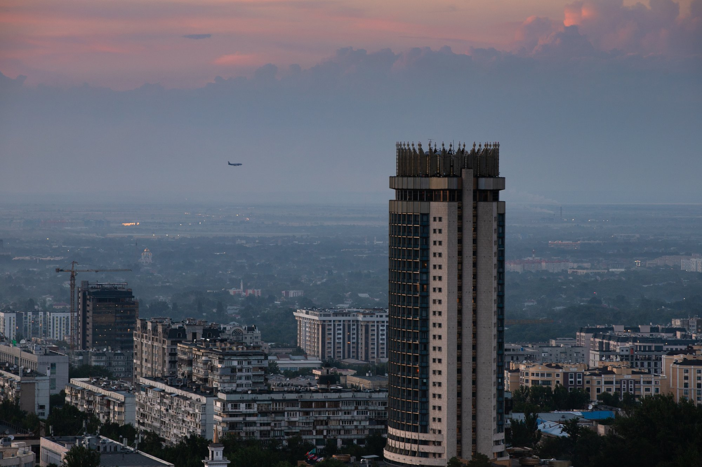

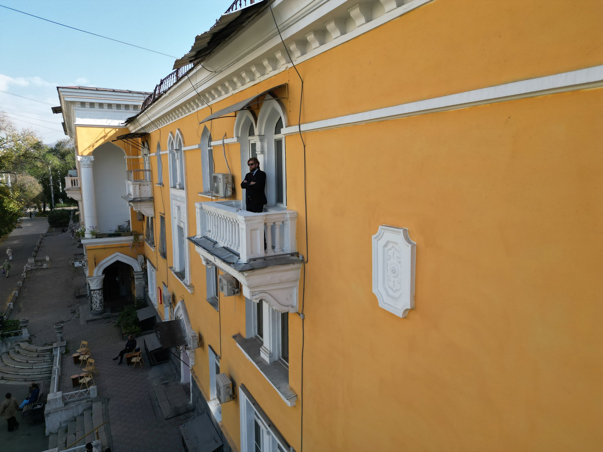

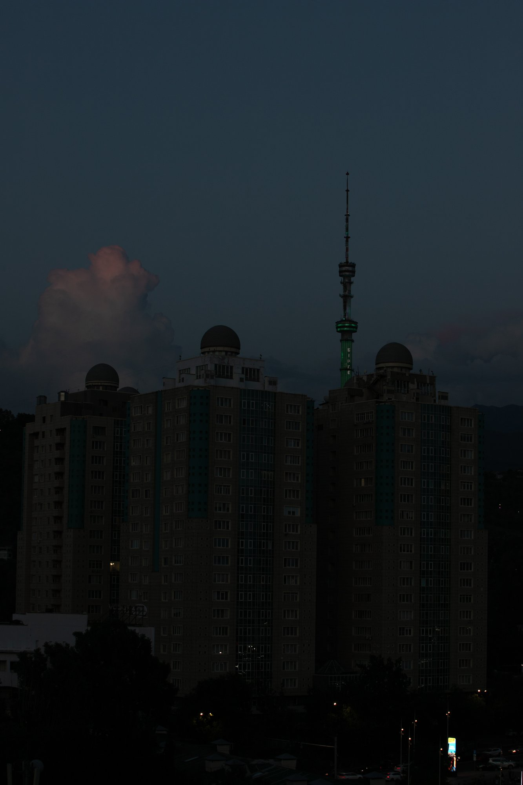

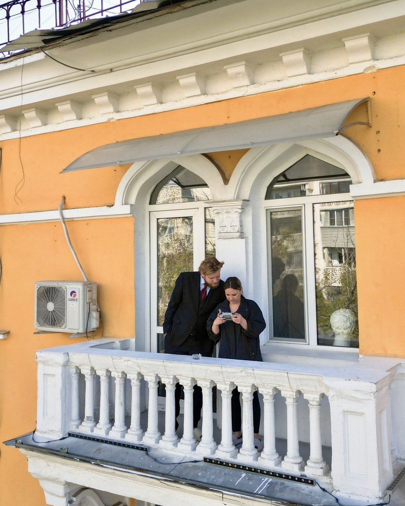

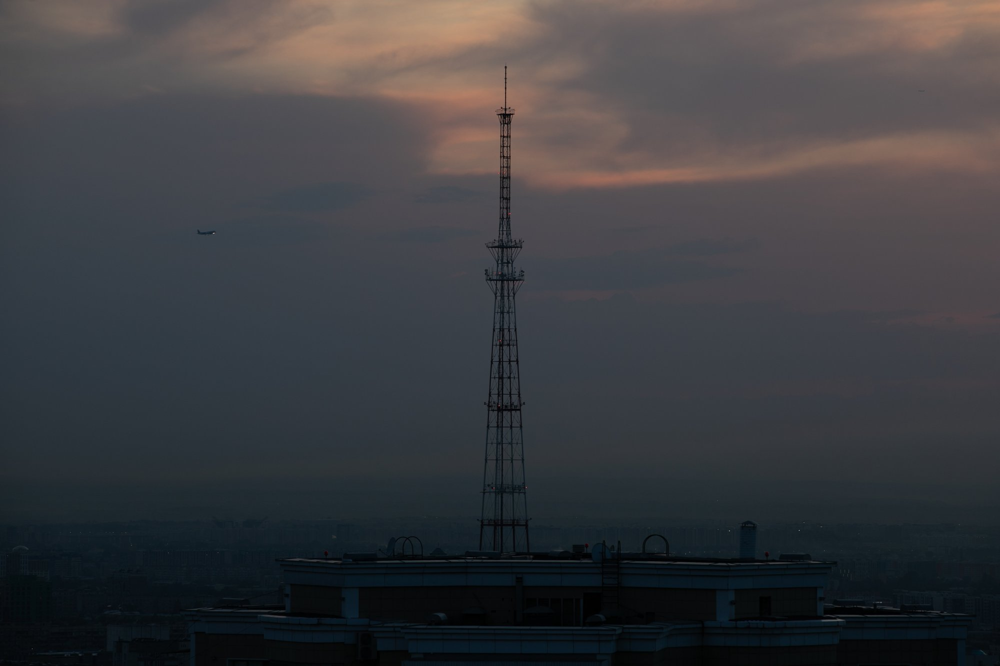

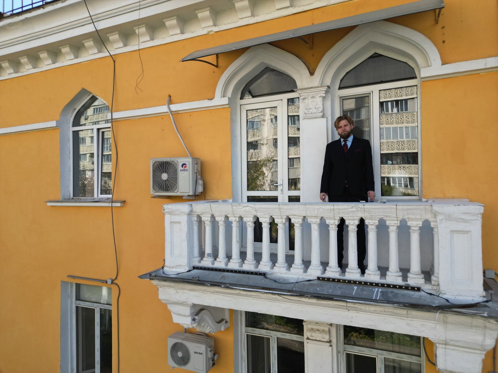

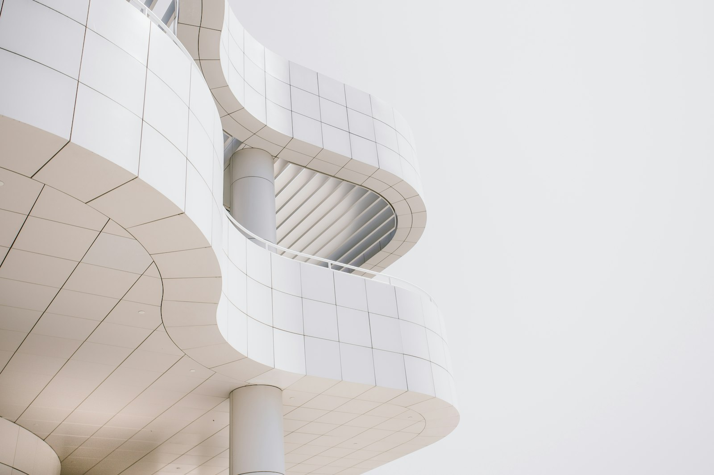

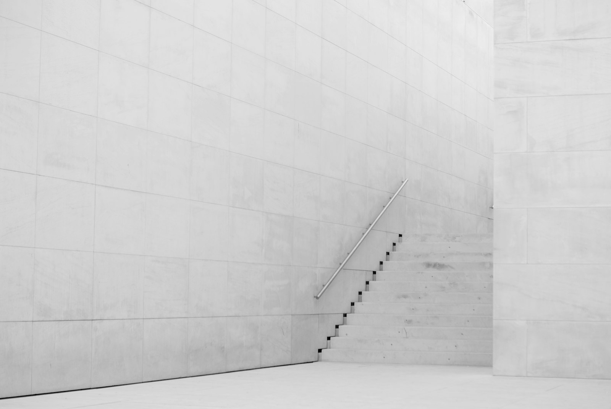

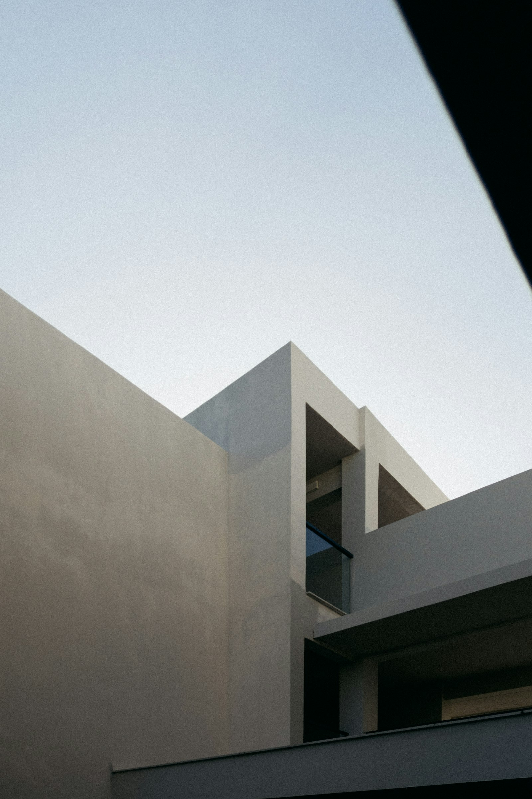

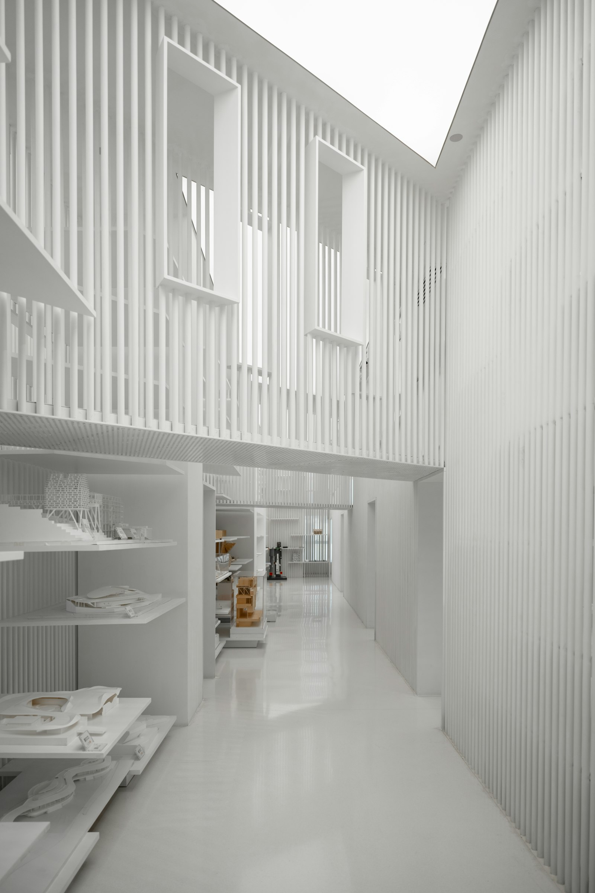

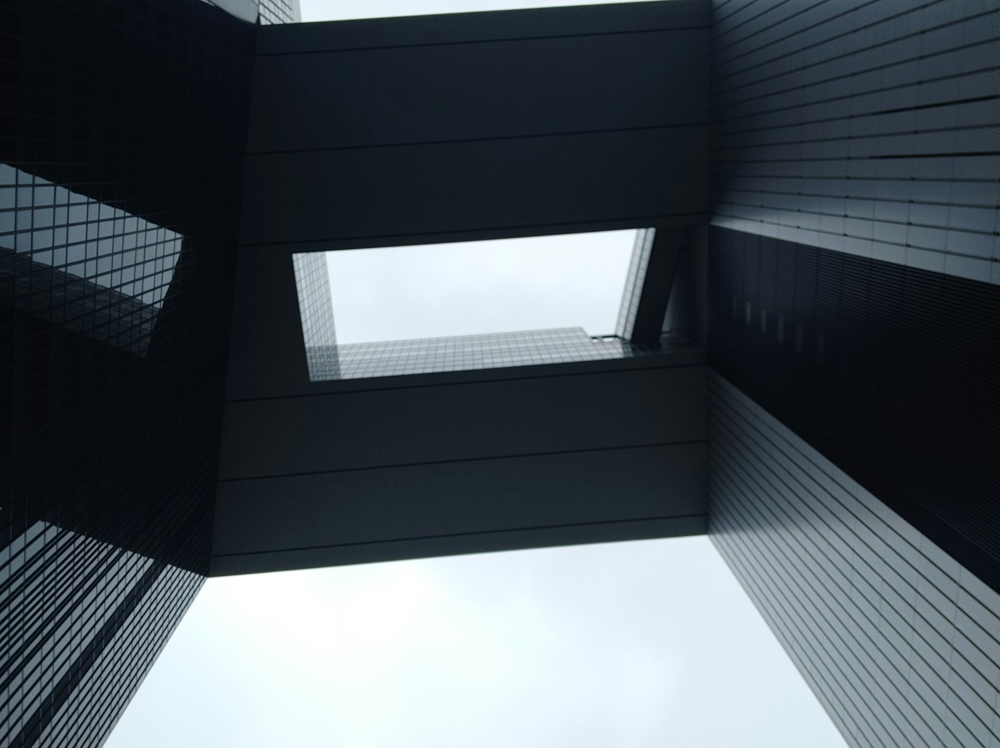

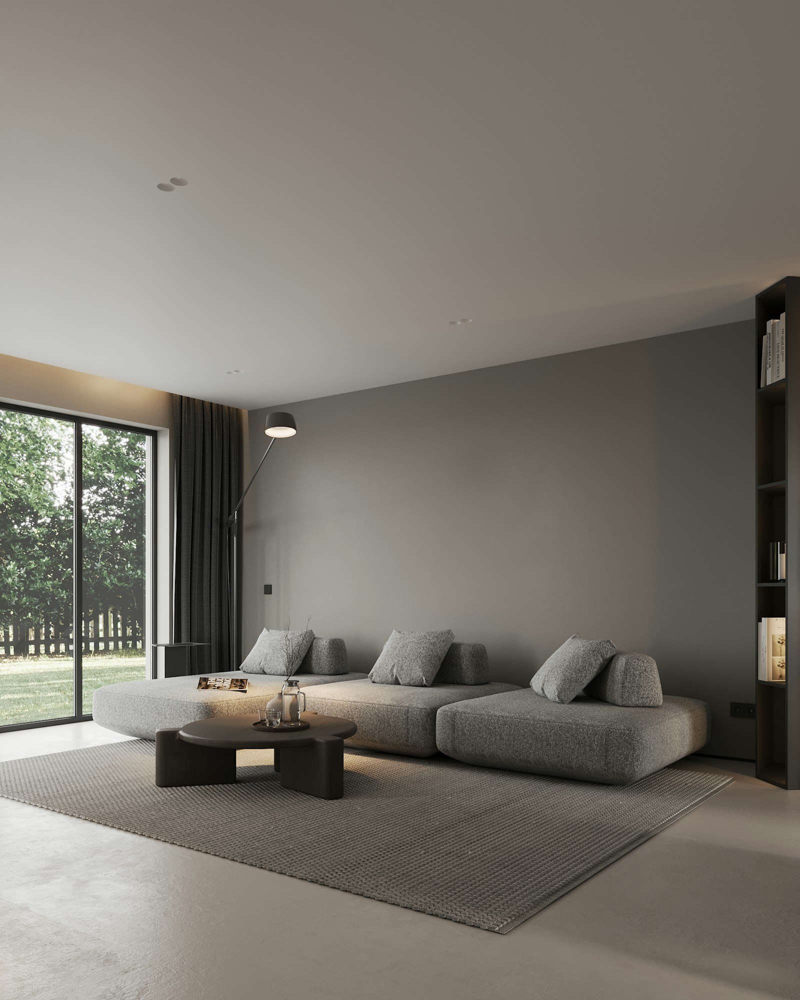

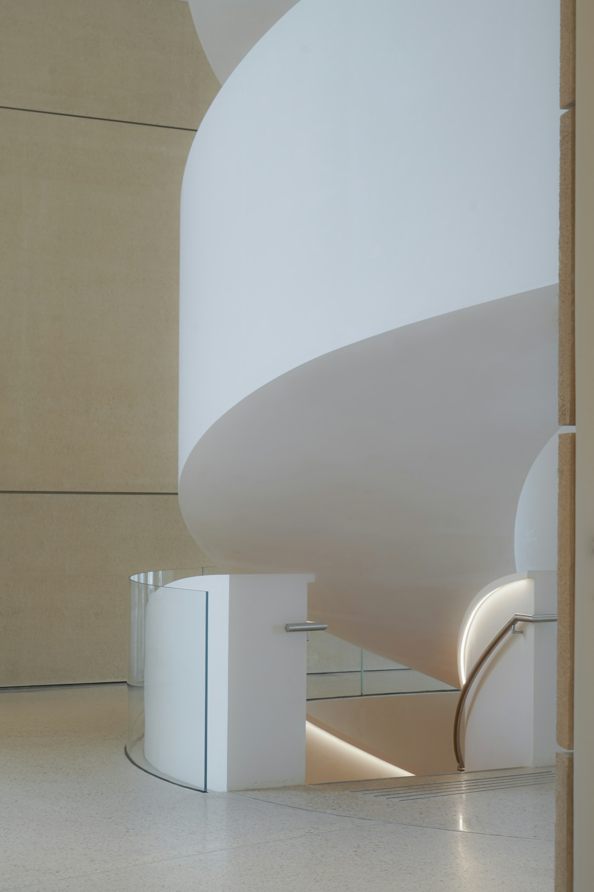

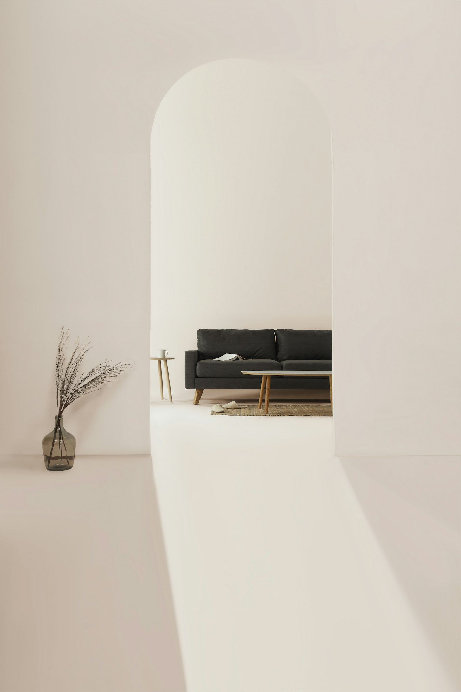
What's included
- Exteriors and interiors
- Aerial photo and video of sites
- From 2 hours of shooting
- Image licensing
Pricing
Pricing on request
Message me on Instagram: I'll share pricing and open dates and help you pick a format. I reply personally.
Ask for pricing